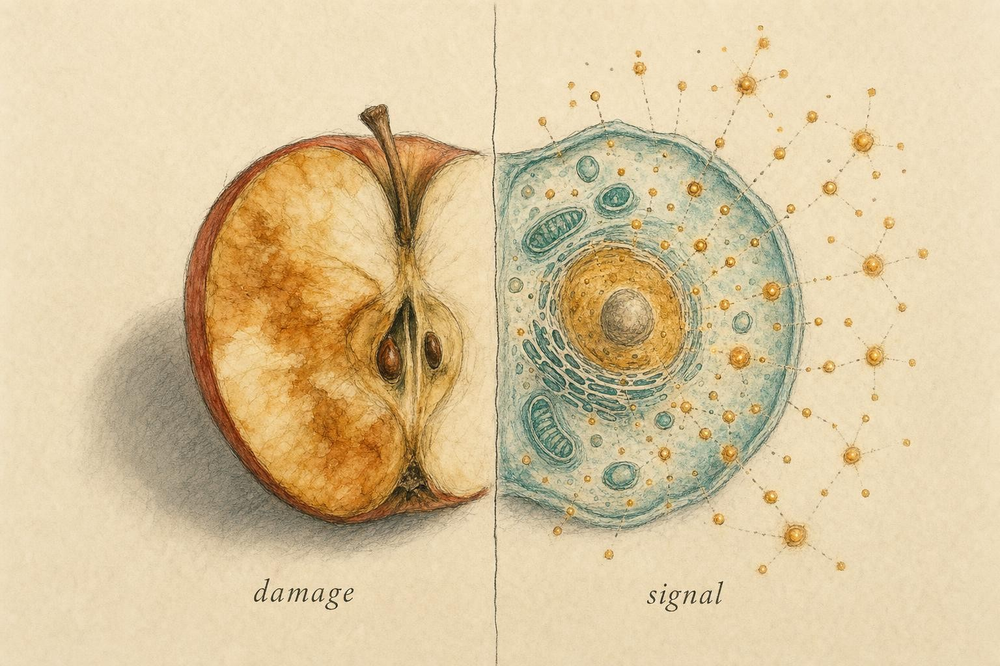
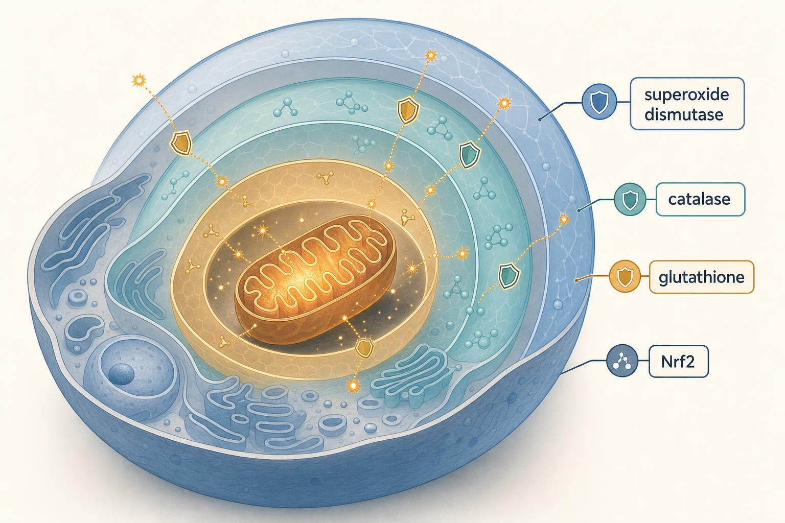

Rust and Repair: Oxidative Stress, Antioxidants, and Hormesis
Why the same molecules that corrode us are also the ones that make us stronger.
Cut an apple in half and leave it on the counter. Within minutes the exposed flesh browns, the crisp interior turning dull and leathery. What you are watching is oxidation , oxygen from the air chemically attacking the fruit's tissues, the same slow chemistry that turns iron to rust and butter rancid. Now consider that every cell in your body is running a controlled version of that reaction, right now, billions of times per second, to extract energy from the food you ate this morning. You are, in a very literal sense, a slow-burning apple.
The puzzle at the heart of this chapter is that oxidation is neither simply good nor simply bad. The molecules that "rust" your proteins and nick your DNA are the very same molecules your cells use to send messages, tune metabolism, and , remarkably , to trigger the adaptations that make tissue tougher. Learning to hold both of these truths at once is one of the most important conceptual moves in the entire course.

The same chemistry that browns an apple also carries messages inside a living cell." data-image-idx="0" style="display:block;max-width:100%;max-height:75vh;height:auto;width:auto;margin:0 auto;cursor:pointer;">Oxygen: the double-edged gift
Roughly 2.4 billion years ago, photosynthetic bacteria began flooding Earth's atmosphere with oxygen , a catastrophe for most of the life then living, which was adapted to an oxygen-free world. Oxygen is chemically greedy: it pulls electrons away from other molecules. Organisms that survived the "Great Oxidation Event" did so by domesticating this greed, learning to route oxygen's electron hunger through controlled pathways that release usable energy. That domestication is aerobic respiration, and it is why you breathe.
Here is the mechanism in brief. Inside your mitochondria , the membrane-bound compartments that act as cellular power plants , food-derived electrons are passed down a series of protein complexes called the electron transport chain. At the end of the line, oxygen accepts those electrons and combines with hydrogen to form water. The energy released along the way is captured as ATP, the cell's usable fuel currency. It is an elegant, efficient system. But it leaks.
Every so often , estimates historically ranged from a fraction of a percent to a few percent of oxygen consumed , an electron escapes the chain prematurely and lands on an oxygen molecule out of turn. Instead of forming harmless water, it forms a partially reduced, chemically unstable species. This is the origin of the molecules at the center of our story.
This leak is not evenly distributed along the chain. Two protein complexes, confusingly named Complex I and Complex III, account for most of the electron slippage, and the rate of leakage rises and falls with how hard the mitochondria are working and how electron-rich the chain becomes at any given moment. During intense exercise, for instance, electron flow through the chain accelerates dramatically, and with it, the absolute amount of reactive oxygen species produced, even though the fraction leaking may not change much. This single fact, that harder metabolic work generates more reactive byproducts, is the thread that will connect this chapter's chemistry to the exercise physiology discussed later on.
What, precisely, is a reactive oxygen species?
A reactive oxygen species (ROS) is an oxygen-containing molecule that is chemically more reactive than ordinary molecular oxygen (O₂) because it carries an unpaired electron or an easily broken bond that makes it eager to react. "Reactive" is the operative word: these molecules do not sit still. They grab electrons from whatever is nearby , a lipid in a membrane, an amino acid in a protein, a base in DNA , and in doing so they chemically alter that target.
The ROS family is not monolithic; its members differ enormously in aggressiveness and lifetime:
Superoxide (O₂•⁻) is the primary radical produced when the electron transport chain leaks. It is moderately reactive and short-lived, and it is also produced deliberately by dedicated enzymes called NADPH oxidases , a fact that will matter enormously in a moment.
Hydrogen peroxide (H₂O₂) is, technically, not even a radical , it has no unpaired electron. It is relatively stable, can diffuse across membranes, and lingers long enough to travel between cellular compartments. This stability is exactly why it has become the cell's preferred signaling molecule. Hold that thought.
The hydroxyl radical (•OH) is the thug of the family: so ferociously reactive that it reacts with essentially the first molecule it touches, within nanometers of where it forms. It cannot signal because it cannot travel; it can only damage. It is generated when H₂O₂ encounters free iron or copper in the so-called Fenton reaction.
Cousins in the family: reactive nitrogen species and singlet oxygen
Oxygen is not the only reactive element cells must manage. A parallel family called reactive nitrogen species (RNS) arises when nitric oxide (NO), itself an important signaling gas that relaxes blood vessels and helps immune cells communicate, collides with superoxide. The product, peroxynitrite (ONOO⁻), is even more indiscriminately destructive than the hydroxyl radical: it nitrates proteins, damages DNA, and can disable entire enzyme complexes in one strike. Peroxynitrite formation is one reason chronic inflammation, which floods tissue with both nitric oxide and superoxide at once, is so much more damaging than either signal alone.
A further relative, singlet oxygen (¹O₂), is not a radical either; it is ordinary molecular oxygen with one electron bumped into an excited, higher-energy arrangement. It forms mainly when light energy strikes a light-absorbing pigment in the presence of oxygen, which is why singlet oxygen matters enormously in skin exposed to ultraviolet radiation and in the light-harvesting membranes of plants, but comparatively little in the everyday chemistry of resting human muscle or liver.
The practical lesson is that "oxidative stress" is really an umbrella term covering a whole chemical family with different sources, different lifetimes, and different targets. When a study reports that oxidative stress increased, a careful reader immediately asks which species was measured, because the answer changes what the finding actually means.
From villain to messenger: the redox revolution
For most of the twentieth century, the story stopped at "damage." The free radical theory of aging, proposed by Denham Harman in 1956, cast ROS as agents of accumulating molecular wreckage , the reason we grow old, the reason cells fail. This framing was intuitive, powerful, and, as we now understand, importantly incomplete.
The correction came from careful observation of what cells actually do with ROS. Cells do not merely tolerate reactive oxygen species; they manufacture them on purpose. NADPH oxidases exist for the sole function of producing superoxide and hydrogen peroxide. Immune cells, as you saw in earlier chapters, use a "respiratory burst" of ROS to kill engulfed pathogens , a controlled chemical weapon. But beyond killing, cells use low, tightly regulated pulses of H₂O₂ to regulate their own behavior.
The mechanism is beautifully specific. Hydrogen peroxide can reversibly oxidize particular cysteine amino acids in target proteins , the sulfur atom in a cysteine side chain is exquisitely sensitive to oxidation. This oxidation acts like a molecular switch, changing the protein's shape and activity, and it can be switched back off by the cell's reducing machinery. Through this reversible chemistry, H₂O₂ activates a roster of signaling pathways , MAPK, PI3K/Akt, Nrf2, HIF-1α, AP-1, and NF-κB among them , that govern metabolism, growth, differentiation, and stress responses (Bryan et al., 2023). Specialized sensor proteins called peroxiredoxins act as relay stations, catching the peroxide signal and passing the oxidation onward to downstream targets.
Sies and Jones (2020) crystallized this reframing in a single influential phrase: ROS are pleiotropic physiological signaling agents. "Pleiotropic" means having many effects. At physiological nanomolar concentrations, hydrogen peroxide and superoxide are not accidents to be mopped up , they are the cell's redox vocabulary, a language written in reversible oxidation.
Concrete examples make this abstraction vivid. When a cell is briefly starved of oxygen, a rise in mitochondrial ROS helps stabilize a protein called hypoxia-inducible factor 1-alpha (HIF-1α), which then switches on genes that improve oxygen delivery and metabolic efficiency, an adaptive response to a hypoxic (low-oxygen) challenge that depends on ROS acting as messenger, not as damage. Insulin signaling offers a second example: when insulin binds its receptor, the cell briefly generates a burst of hydrogen peroxide that inactivates a class of enzymes called protein tyrosine phosphatases, which would otherwise shut the signal down prematurely. The peroxide pulse is not a side effect of insulin action; it is part of how the signal is amplified and sustained.
The measurement problem: why ROS are so hard to study
One reason the field took decades to move from "ROS are damage" to "ROS are damage and message" is that reactive oxygen species are exceptionally difficult to measure accurately in living tissue. Their defining property, high reactivity, is precisely what makes them hard to catch: a molecule that reacts within microseconds of forming does not sit still for a detector. Many older studies relied on probes and assays that, it later became clear, could themselves generate artificial ROS during the measurement process, or that responded to several different oxidant species without distinguishing between them, inflating and confusing the reported signal.
Because directly counting ROS molecules in a living human is rarely feasible, researchers instead measure downstream footprints, the stable byproducts left behind after ROS have already reacted with a lipid, a protein, or a strand of DNA. This indirect approach is workable but imperfect, and it means that different studies measuring "oxidative stress" are often measuring genuinely different things, which is one honest reason the human antioxidant literature can look inconsistent even when each individual study was competently done. We will return to this measurement question directly in a few pages, because it matters for how skeptically to read any single claim about oxidative stress in the news.
Eustress and distress: the crucial distinction
To hold both truths , messenger and menace , the field adopted a distinction borrowed from stress biology. Sies and colleagues coined the pairing oxidative eustress and oxidative distress (Sies et al., 2017; Sies & Jones, 2020).
Oxidative eustress ("eu-" meaning good, as in euphoria) is the low-level, physiological state in which ROS operate as beneficial signals enabling essential cellular processes. Oxidative distress is the pathological state in which ROS overwhelm the system, causing indiscriminate damage to lipids, proteins, and DNA (Bryan et al., 2023). The difference between them is not the identity of the molecule , it is the same H₂O₂ in both cases , but the amount, the location, and the duration. This is a dose story. Keep that firmly in mind; it is the seed from which hormesis will grow.
Defining oxidative stress properly
We can now state the central definition with precision. The authoritative formulation, from Sies and colleagues in the Annual Review of Biochemistry, defines oxidative stress as:
"An imbalance between oxidants and antioxidants in favor of the oxidants, leading to a disruption of redox signaling and control and/or molecular damage."
Sies, Berndt & Jones (2017)
Read that definition slowly, because two features distinguish it from the naïve version. First, it is defined as an imbalance, not as the mere presence of oxidants. ROS are always present; their presence is not the problem. Second , and this is the modern refinement , the harm is described as a disruption of redox signaling and control, not only as crude molecular damage. Oxidative stress can be damaging even when it does not shred molecules, if it garbles the redox messages the cell relies on.
The concept that anchors this balance is redox balance (or redox homeostasis). "Redox" is shorthand for reduction-oxidation: a coupled chemistry in which one molecule loses electrons (is oxidized) while another gains them (is reduced). Your cells maintain a carefully tuned electron economy , a slight surplus of reducing power held in reserve, ready to neutralize oxidants , and they defend a set-point the way a thermostat defends a temperature. Oxidative stress is what happens when the thermostat loses control.
Crucially, imbalance can run in either direction. Too many oxidants is the familiar problem. But an excess of reducing power , reductive stress , is also pathological, because it silences the ROS signals the cell needs. This is not a theoretical footnote. It is precisely why, as we will see, forcing antioxidant levels ever higher can create its own kind of dysfunction.
How scientists actually measure oxidative stress
Given the measurement problem introduced earlier, what do researchers actually report when they say a person or tissue is under oxidative stress? A handful of stable, chemically well-defined biomarkers have become the field's standard currency. F2-isoprostanes are compounds formed when free radicals attack polyunsaturated fats in cell membranes; because they are stable and measurable in blood or urine, they are widely regarded as one of the more reliable indices of lipid oxidation in the body. 8-hydroxy-2'-deoxyguanosine (8-OHdG) is a damaged DNA base, produced when a hydroxyl radical or similar oxidant attacks guanine, and its urinary concentration is used as an index of oxidative DNA damage. Protein carbonyl content measures oxidized amino acid side chains directly on proteins. And the ratio of reduced glutathione to its oxidized partner, glutathione disulfide (GSH to GSSG), is used as a running readout of a cell's overall redox balance, since a healthy cell keeps that ratio heavily tilted toward the reduced form.
None of these measures is perfect. Each reflects a different oxidative process, in a different tissue compartment, over a different time window, and levels can be influenced by diet, exercise timing, and even the specific assay kit used in a given laboratory. When you next encounter a headline claiming a food or supplement "reduces oxidative stress," a well-trained reader immediately asks which biomarker was used, in which tissue, and whether the change in that biomarker was ever shown to translate into a meaningful difference in health or disease, a translation step that, as the final sections of this chapter will show, very often fails to occur.
The body's antioxidant defenses
If ROS were left unchecked, the leak from respiration alone would corrode us within hours. It does not, because every cell is equipped with a layered defense system , an "antioxidant" being simply any molecule that can safely neutralize an oxidant by donating an electron without itself becoming dangerous. These defenses fall into two broad categories, and the distinction between them turns out to be the most practically important thing in this chapter.
Endogenous antioxidants: the enzymatic frontline
Endogenous antioxidants are the ones your body makes itself, and they do the overwhelming majority of the work. They are catalytic , enzymes that neutralize ROS over and over, each molecule processing thousands of oxidants per second:
Superoxide dismutase (SOD) converts the primary radical, superoxide, into hydrogen peroxide and oxygen , the first line of defense, positioned right where superoxide is born. Humans carry three isoforms tuned to different compartments: copper/zinc-SOD (SOD1) patrols the cytosol, manganese-SOD (SOD2) works inside the mitochondrial matrix where the electron transport chain leaks, and extracellular SOD (SOD3) protects the space outside cells. Having a dedicated isoform inside the mitochondrion is not a coincidence; it places the defense at the exact site of production, the same design logic that recurs throughout this section.
Catalase and the glutathione peroxidase system then convert that hydrogen peroxide into water. The glutathione system relies on glutathione (GSH), a small sulfur-containing molecule that is the cell's most abundant reducing buffer, present in millimolar concentrations. Each time glutathione peroxidase neutralizes a molecule of hydrogen peroxide, it converts two molecules of reduced glutathione (GSH) into one molecule of oxidized glutathione disulfide (GSSG); a separate enzyme, glutathione reductase, then spends cellular energy in the form of NADPH to convert GSSG back into GSH, closing the loop. The ratio of GSH to GSSG at any given moment functions like a capacitor charge level for the cell's reducing power, and it is this ratio, more than the absolute amount of glutathione present, that most directly tracks a cell's redox state.
The thioredoxin and peroxiredoxin systems provide a parallel network that both scavenges peroxide and, as we saw, relays redox signals (Sies et al., 2017). Like glutathione reductase, thioredoxin reductase is powered by NADPH, which means both major antioxidant systems ultimately draw on the same energy currency, linking a cell's overall metabolic and energetic state to its capacity to defend itself against oxidants.
Governing this whole apparatus is a master regulatory switch: the transcription factor Nrf2, held in check under normal conditions by a partner protein called Keap1. When oxidants rise, Keap1's sensor cysteines are oxidized, Nrf2 is released, and it travels to the nucleus to switch on hundreds of protective genes , antioxidant enzymes, detoxification proteins, glutathione-synthesis machinery. This is the key point: a rise in ROS is itself the signal that tells the cell to build more defenses. The stressor triggers the adaptation. We are one step from hormesis.
The full name of Nrf2, nuclear factor erythroid 2-related factor 2, describes a transcription factor, a protein that binds DNA and controls whether nearby genes are switched on. Under quiet conditions, Keap1 (Kelch-like ECH-associated protein 1) continuously tags Nrf2 for destruction, keeping its levels low. Keap1 itself functions as the sensor because it is studded with reactive cysteine residues; when oxidants or certain reactive plant compounds modify those cysteines, Keap1 changes shape, releases its grip, and newly made Nrf2 accumulates and moves into the nucleus. There it partners with another protein to bind a DNA sequence called the antioxidant response element (ARE), found in the promoter region of more than 200 genes, including those encoding SOD, glutathione-synthesis enzymes, and the machinery of the thioredoxin system. In short, Keap1 to Nrf2 to ARE is the molecular circuit that converts a transient chemical insult into a durable, systemwide upgrade of defenses, and it is the mechanistic engine underneath essentially every example of hormesis discussed later in this chapter.
Dietary antioxidants: the supporting cast
Dietary antioxidants are the ones you consume , vitamin C, vitamin E, carotenoids, and the vast family of plant polyphenols. Popular culture treats these as the main event; the biochemistry suggests otherwise. Unlike the enzymatic defenses, most dietary antioxidants are stoichiometric, not catalytic: one molecule of vitamin C neutralizes roughly one oxidant and is used up. They function more as a modest sacrificial buffer than as a primary defense.
Intriguingly, some of the health benefits attributed to dietary "antioxidants" may not come from their antioxidant chemistry at all. Many polyphenols are, at the doses we actually consume, mild pro-oxidants or metabolic irritants that nudge the Nrf2 system into action , meaning they work by provoking a small stress, not by absorbing one. That is a hormetic mechanism in disguise, and it foreshadows why the intuitive "more antioxidants = better" logic breaks down so badly in the clinic.
Chain-breaking antioxidants and the regeneration network
Not all small-molecule antioxidants work the same way. Vitamin C (ascorbic acid) is water-soluble and works mainly in the watery compartments of the cell and blood plasma, donating an electron to neutralize an oxidant and becoming, itself, a mild and relatively harmless radical that is then recycled back to its active form. Vitamin E (chiefly alpha-tocopherol) is fat-soluble and sits inside cell membranes, where it performs a specific job called chain-breaking antioxidant activity: when a free radical attacks one fatty acid in a membrane, it can trigger a self-propagating chain reaction called lipid peroxidation, in which the damaged fatty acid attacks its neighbor, which attacks the next, and so on down the membrane. Vitamin E interrupts that chain by donating its own electron and absorbing the reactive intermediate before the damage can propagate further, sacrificing itself to protect the surrounding membrane.
Once vitamin E has done this job, it becomes a radical itself and is, in healthy tissue, regenerated back to its active form by vitamin C, which donates an electron to it; vitamin C, now oxidized, can in turn be regenerated using electrons drawn from glutathione. This chain of hand-offs, sometimes called the antioxidant network, illustrates why thinking about any single antioxidant in isolation is misleading: these molecules function as a linked relay team, not as independent soldiers, and a deficiency or excess anywhere in the chain can shift the behavior of the whole system.
Several other small molecules round out this network. Coenzyme Q10 (ubiquinone), a component of the electron transport chain itself, also functions as a lipid-soluble antioxidant. Uric acid, better known as the culprit behind gout when present in excess, is in fact the single largest contributor to total antioxidant capacity in human blood plasma. Bilirubin, the pigment responsible for jaundice and for bruises turning yellow as they heal, has measurable antioxidant activity at the low concentrations found in healthy blood. None of these facts is an argument for supplementing with uric acid or bilirubin; they are included to make a broader point, that "antioxidant" is a chemical function performed by an enormous and diverse cast of molecules the body already produces and regulates, most of which never appear on a supplement label.
The antioxidant capacity myth: what happened to ORAC
For much of the 2000s, food packaging and health articles touted a food's Oxygen Radical Absorbance Capacity (ORAC), a laboratory test-tube measurement of how much a food extract could neutralize a standardized oxidant in a beaker. Blueberries, dark chocolate, and various "superfoods" earned marketing claims from high ORAC scores. In 2012, the United States Department of Agriculture withdrew its ORAC database for foods entirely, stating plainly that the values had no proven relevance to the effects of specific foods on human health, because antioxidant capacity in a test tube does not reveal what happens after digestion, absorption, and metabolism inside an actual human body.
The ORAC episode is a compact case study in a mistake this chapter has been building toward from its first page: treating "antioxidant" as a single, simple, always-beneficial quantity that can be measured in a beaker and assumed to transfer, more of it is better, directly into a living, signaling, hormetically responsive organism. The chemistry inside a test tube has no Nrf2 pathway, no mitochondria producing a training signal, no redox balance to disrupt. A high ORAC score describes a food's behavior toward a synthetic oxidant in glassware; it does not describe what that food does inside you.

Layered defense: enzymatic antioxidants intercept ROS near their mitochondrial source, while Nrf2 governs the whole response." data-image-idx="1" style="display:block;max-width:100%;max-height:75vh;height:auto;width:auto;margin:0 auto;cursor:pointer;">Hormesis: the dose makes the medicine
We now arrive at the intellectual keystone of the course. The Renaissance physician Paracelsus famously observed that "the dose makes the poison" , that any substance is toxic at a high enough amount and harmless or beneficial at a low one. Hormesis is the sharper, more surprising version of that insight: a low dose of a stressor does not merely fail to harm , it actively benefits, by triggering an adaptive response that leaves the system stronger than before.
The signature of hormesis is a biphasic dose-response curve: as the intensity of a stressor rises from zero, the outcome first improves, reaches a peak, and then , as the dose climbs further , reverses and turns harmful. Plotted, it looks like an inverted U (or, depending on the outcome measured, a J). The same agent is beneficial at moderate doses and toxic at high ones. Nitti and colleagues (2022) organize the entire redox field around exactly this spectrum: moderate ROS activate redox-sensitive pathways driving proliferation, growth, and differentiation, while supraphysiological ROS cause biomolecular damage , hormesis at one end, oxidative distress at the other.
The logic is intuitive once you see it through the Nrf2 mechanism. A moderate oxidative challenge trips the sensor, and the cell responds by overbuilding its defenses , synthesizing more SOD, more glutathione, more repair enzymes than the immediate challenge required. When the challenge passes, the reinforced defenses remain. The cell has been vaccinated against future stress. Too small a challenge never trips the sensor, so no adaptation occurs. Too large a challenge overwhelms the defenses before they can respond, and damage accumulates. Only the moderate, intermittent dose lands in the adaptive window.
Mitohormesis: ROS as the trigger for health
When the stressor is specifically the ROS leaking from mitochondria, the phenomenon has a name: mitohormesis. In a synthesis of over 500 publications, Ristow and Schmeisser (2014) assembled the evidence that low levels of mitochondrial ROS function as signaling molecules that promote health and delay chronic disease. Interventions as varied as calorie restriction, transient hypoxia, temperature stress, and physical activity all converge on the same mechanism: they raise mitochondrial ROS modestly, which activates adaptive pathways , AMPK, TOR, and the sirtuins , that improve metabolic health and, in model organisms, extend lifespan.
Then comes the finding that should unsettle anyone who owns a bottle of antioxidant capsules. Ristow and Schmeisser reported that pharmacological antioxidant interference with these ROS signals is, in their words, "useless or even harmful." If the ROS pulse is the health signal, and you mop it up with high-dose antioxidants, you delete the message. The stressor no longer registers; the adaptation never fires. This is not speculation but the direct prediction of the mechanism , and, as we will see, it has been tested in humans.
Hormesis beyond exercise: a short survey
Exercise is the clearest example of hormesis because the stressor is easy to dose and the outcome is easy to feel, but it is far from the only one. Recognizing the same underlying logic across different stressors helps make clear that hormesis is a general principle of biology, not a quirk specific to muscle.
Caloric restriction, eating meaningfully less than one would eat freely while avoiding malnutrition, reliably extends lifespan in yeast, worms, flies, and rodents, and part of that effect appears to run through the same mitohormetic mechanism discussed above: a mild nutrient-stress signal activates AMP-activated protein kinase (AMPK), a cellular fuel-sensing enzyme, along with a family of proteins called sirtuins, and the transcription factor FOXO (forkhead box O), all of which converge on strengthening stress resistance and quality-control pathways such as autophagy, the cell's internal recycling system for damaged components.
Temperature stress works similarly. Brief exposure to cold or heat activates the production of heat shock proteins (HSPs), a class of molecular chaperones that help other proteins fold correctly and that also participate in broader stress-resistance signaling; a body repeatedly and mildly challenged by temperature extremes becomes, within limits, more resilient to a range of other stressors as well, a phenomenon called cross-adaptation.
Phytochemical hormesis, foreshadowed earlier in this chapter, describes how many of the compounds in vegetables that are popularly called antioxidants, such as sulforaphane in broccoli and resveratrol in grapes, actually act at the concentrations found in food as mild, low-dose irritants or pro-oxidants that trip the Keap1 to Nrf2 switch, rather than as bulk electron donors. Some researchers describe this as xenohormesis, the idea that mild plant stress chemicals, evolved by the plant to deter insects or cope with its own environmental stress, cross over to trigger a protective hormetic response in the animal that eats them.
One further example deserves mention specifically because it is genuinely contested rather than settled: radiation hormesis, the hypothesis that very low doses of ionizing radiation, well below levels known to cause harm, might likewise trigger a net beneficial adaptive response rather than a proportionally scaled-down risk. Unlike the exercise and caloric restriction examples, this claim remains scientifically disputed, and the regulatory and public health consensus continues to treat any dose of ionizing radiation as carrying some non-zero cancer risk, out of caution, since the stakes of being wrong in that domain are high and irreversible. It is included here not because it is established, but because a good scientific education requires seeing where a plausible framework is being actively tested rather than universally accepted.
Exercise: hormesis you can feel
No system illustrates redox hormesis more cleanly than skeletal muscle under load. In their landmark Physiological Reviews article, Powers and Jackson (2008) established that contracting muscles generate both reactive oxygen and reactive nitrogen species, and , critically , that this is not incidental damage but regulated physiology. Low-to-moderate oxidant levels play essential regulatory roles in gene expression, cell signaling, and even the production of muscle force itself. A muscle with its ROS entirely scavenged actually produces less force; a modest oxidative tone is required for optimal contraction. High oxidant levels, by contrast, promote contractile dysfunction and fatigue. There is the inverted U again, written into every rep.
Powers and Jackson documented that exercise-induced oxidants directly regulate the expression of antioxidant enzymes, stress proteins, DNA repair proteins, and mitochondrial electron transport proteins. In other words, the oxidative stress of a workout is the signal that instructs the muscle to rebuild itself better. Radak and colleagues (2013) drew the conclusion explicitly: exercise-induced mild-to-moderate ROS generation is a "tool" for hormesis, and the beneficial adaptations of training are driven by exercise-induced oxidative stress acting as a signaling stimulus. The soreness, the transient inflammation, the oxidative flush , these are not the price of adaptation. They are its cause.
Where, mechanistically, does this exercise-induced ROS actually come from? Contracting muscle fibers generate reactive oxygen from several distinct sources working together: leak from the electron transport chain rises simply because mitochondria are working harder, but two additional dedicated sources contribute substantially. An enzyme called xanthine oxidase, activated during the metabolic stress of intense contraction, generates superoxide as a byproduct of breaking down purine molecules. And NADPH oxidase 2 (NOX2), the same enzyme family immune cells use for their respiratory burst, is also expressed in muscle tissue and is deliberately activated by the mechanical and calcium signals of contraction itself, meaning the muscle is not merely leaking oxidants as a side effect of hard work, it is manufacturing them on purpose as part of the adaptive signal. That signal converges, through the AMPK and calcium-sensitive pathways mentioned earlier, on a master regulator of mitochondrial growth called peroxisome proliferator-activated receptor gamma coactivator 1-alpha (PGC-1α), which switches on the genetic program for building new mitochondria, a process called mitochondrial biogenesis. This is the concrete answer to why a training program makes a muscle better at using oxygen over weeks: repeated ROS pulses, via PGC-1α, repeatedly order the construction of more of the very machinery that produced the pulse in the first place.
The antioxidant paradox in athletes
This mechanism generates a sharp, testable prediction: if you flood an exercising body with high-dose antioxidants, you should blunt the training adaptation. And that is, repeatedly, what controlled human trials have found. In several studies, supplementing endurance and resistance trainees with large doses of vitamin C and vitamin E prevented the exercise-induced increase in mitochondrial biogenesis and antioxidant enzyme expression , the very adaptations the athletes were training to build. The supplements did exactly what the mechanism predicted: they erased the signal, and with it the benefit.
The specific human data behind this claim, as synthesized by Ristow and Schmeisser (2014), came from controlled trials in which healthy, physically active volunteers trained for several weeks while taking large daily doses of vitamin C (around 1 gram) and vitamin E (around 400 international units), amounts well above what a typical diet supplies. Compared with training alone, the supplemented groups showed a blunted rise in markers of mitochondrial biogenesis and a blunted increase in the body's own endogenous antioxidant enzymes, the opposite of an "extra protection" effect; in some outcome measures, the expected improvement in insulin sensitivity from exercise training was prevented almost entirely. The antioxidants did exactly what a chemist would predict from the mechanism: they mopped up the messenger before it could deliver its instructions.
Two nuances keep this finding from becoming its own kind of hype. First, the effect is a dose and timing story, exactly like everything else in this chapter: the doses used in these trials were high, isolated, and taken daily around the training period, not the modest amount of vitamin C in an orange eaten with breakfast. Second, the effect appears specific to blunting the training adaptation itself; it is not a claim that vitamin C or E is generally toxic, or that a person recovering from illness or with a demonstrated nutrient deficiency should avoid them. The practical distinction that recurs throughout this course, between a whole food's modest, mixed, self-limiting dose and an isolated supplement's large, sustained, unbuffered dose, is exactly the distinction that determines whether an antioxidant helps, does nothing, or backfires.
This is the harm-reduction lesson at the heart of the chapter, and it deserves a plain statement. Blindly megadosing antioxidants is not a neutral "insurance policy." Because ROS carry indispensable adaptive messages, suppressing them can be counterproductive. This does not mean antioxidants are poison, that vitamin C from food is bad, or that everyone should avoid supplements , it means the naïve model of "oxidants bad, antioxidants good, more is better" is wrong at the level of mechanism. Any decision about high-dose supplementation is genuinely medical and should be made with a clinician who knows your circumstances, not on the basis of a marketing slogan.
The vicious circle: oxidative stress and inflammation
Everything so far connects directly back to the inflammation you studied in Chapter 4, because oxidative stress and inflammation are not separate stories , they are two descriptions of one intertwined process, locked in a mutually reinforcing loop.
The loop runs in both directions. In one direction, ROS trigger inflammation: rising oxidants activate the master inflammatory switch NF-κB (through the same redox-sensitive cysteine chemistry we met earlier), which turns on genes for inflammatory cytokines. In the other direction, inflammation generates ROS: activated immune cells deploy NADPH oxidases and the respiratory burst, releasing oxidants into the tissue, and inflammatory cytokines like TNF-α stimulate still more ROS production in surrounding cells. Altanam and colleagues (2025) document exactly this architecture , ROS production triggering inflammatory signaling through the NF-κB and NRF2-Keap1 pathways, and inflammatory cytokines in turn generating more ROS, creating reinforcing feedback loops.
Notice the elegant tension in that description: the very same rise in oxidants activates both NF-κB (pro-inflammatory) and Nrf2 (anti-inflammatory, pro-defense). Under acute, self-limiting conditions this dual activation is adaptive , the fire and the fire brigade are dispatched together, and Nrf2's resolution program eventually damps NF-κB. The trouble comes when the loop cannot switch off.
One specific molecular bridge between oxidative stress and inflammation deserves a closer look because it recurs throughout modern medicine: the NLRP3 inflammasome (NOD-like receptor family, pyrin domain containing 3), a multi-protein sensor complex that immune cells assemble in response to danger signals. Mitochondrial ROS is one of the most potent known triggers for NLRP3 assembly; once assembled, the inflammasome activates an enzyme that cleaves a precursor protein into its active, highly inflammatory form, interleukin-1 beta (IL-1β), one of the most powerful fever- and inflammation-driving signals the immune system possesses. Damaged mitochondria compound the problem by leaking fragments of their own DNA into the cell. Because mitochondria descend evolutionarily from free-living bacteria, mitochondrial DNA (mtDNA) still carries bacterial-like chemical signatures, and the immune system's pattern-recognition receptors treat leaked mtDNA as a damage-associated molecular pattern (DAMP), a danger signal indistinguishable, as far as the immune system can tell, from an actual bacterial infection. A cell under chronic oxidative stress is, in effect, quietly ringing its own bacterial alarm bell.
Why chronic low-grade inflammation is so corrosive
Here the redox lens finally explains the mystery left open in Chapter 4: why chronic low-grade inflammation , the smoldering, systemic, never-resolving state associated with aging, obesity, and metabolic disease , is so uniquely destructive. In acute inflammation, the oxidative burst is intense but brief, a pulse that resolves. In chronic low-grade inflammation, the loop settles into a persistent hum: continuous modest ROS production feeding continuous modest NF-κB activation, each sustaining the other. The eustress pulse becomes distress by duration rather than by intensity.
And chronic exposure has a second consequence: it wears down redox signaling itself. When cells are bathed in constant oxidants, the reversible cysteine switches that carry redox messages become permanently over-oxidized and stuck. The signaling channel is jammed. This is the deeper meaning of Sies's definition , oxidative stress as "disruption of redox signaling and control." The corrosion of chronic inflammation is not only the slow accumulation of damaged molecules; it is the degradation of the cell's ability to hear its own signals. The thermostat, held off its set-point for years, loses the ability to regulate at all.
This same feedback loop is now understood to sit underneath several of the chronic diseases most associated with aging. In atherosclerosis, the buildup of fatty plaque inside artery walls, low-density lipoprotein (LDL) cholesterol particles that become oxidized are far more likely to be engulfed by immune cells in the artery wall, triggering local inflammation that further raises local ROS, further oxidizing more LDL, a self-sustaining local version of the same loop described above. In type 2 diabetes, chronically elevated blood glucose drives excess mitochondrial ROS production in a range of tissues, which both damages insulin-signaling machinery directly and sustains the low-grade inflammation that further worsens insulin resistance. Researchers studying aging itself have coined the term inflammaging to describe the low-grade, sterile, chronic inflammatory state that tends to rise with age even without any infection, and the oxidative-inflammatory feedback loop described here is one of the leading mechanistic explanations for why inflammaging develops and why it proves so difficult to reverse once established.
A note of appropriate caution belongs here. Oxidative stress and neuroinflammation are also actively studied in neurodegenerative conditions such as Alzheimer's disease and Parkinson's disease, and the mechanistic story is genuinely intriguing, but the causal picture in these conditions remains considerably less settled than the atherosclerosis or diabetes examples above; whether oxidative stress is a primary driver, a downstream consequence, or a bit of both is still an active area of research, and this course will not overstate a case that the field itself has not closed.
Honest evidence-grading: the antioxidant supplement story
This chapter is the course's first extended encounter with a discipline you will need throughout: grading evidence honestly, even when the mechanism is seductive and the marketing is loud. The antioxidant-supplement literature is a near-perfect case study in hype outrunning data.
The rationale was compelling. ROS damage biomolecules; damage drives aging and disease; antioxidants neutralize ROS; therefore antioxidant supplements should prevent aging and disease. Every link in that chain is mechanistically plausible. The pharmaceutical and supplement industries invested accordingly, and the public embraced it. Then the large randomized controlled trials arrived , and the effects vanished. As Nitti and colleagues (2022) summarize, dietary antioxidant supplementation has "consistently failed to demonstrate efficacy in preventing aging and chronic disease," and has sometimes produced harmful side effects. Certain large beta-carotene trials, notoriously, found increased cancer risk in high-risk groups. Altanam and colleagues (2025) reach the same measured verdict: despite compelling mechanistic rationale, clinical trials of antioxidant interventions show inconsistent benefit.
Why did such a plausible chain fail? The redox biology of this chapter supplies three converging answers. First, endogenous enzymatic defenses vastly outweigh dietary antioxidants, so swallowing more of the weaker player changes little. Second , the mitohormesis insight , indiscriminately suppressing ROS deletes the adaptive signals that keep tissue healthy, so the intervention can be self-defeating. Third, the crude "antioxidants good" model ignores that redox balance can be pushed too far in the reducing direction, producing its own dysfunction.
It is worth naming a few of the specific trials behind this reversal, because the details are instructive. Two large randomized trials in the 1990s, the Alpha-Tocopherol, Beta-Carotene Cancer Prevention Study and the Beta-Carotene and Retinol Efficacy Trial, gave high-dose beta-carotene supplements to smokers and workers exposed to asbestos, on the reasonable hypothesis that an antioxidant would neutralize the oxidative damage from smoking and reduce lung cancer risk. Both trials were stopped early because the supplemented groups showed a higher, not lower, incidence of lung cancer and overall mortality than the placebo groups. A later large trial testing high-dose vitamin E and selenium for prostate cancer prevention, the Selenium and Vitamin E Cancer Prevention Trial, likewise found no benefit and a modestly increased risk of prostate cancer in the vitamin E group. Systematic reviews pooling many such antioxidant supplement trials together have generally failed to find a mortality benefit, and some have found a small increased risk with certain antioxidant combinations. None of this means beta-carotene, vitamin E, or selenium are inherently harmful; whole foods rich in these compounds are consistently associated with better, not worse, health outcomes in observational research. The specific and repeated failure is of high-dose, isolated, long-term supplementation to reproduce that benefit, which is exactly the pattern this chapter's mechanism predicts.
The lesson is not nihilism about nutrition. A diet rich in colorful plants is robustly associated with health , but likely because whole foods deliver a complex, low-dose mixture that nudges the Nrf2 system hormetically, alongside fiber, minerals, and countless other constituents, not because they "flood the body with antioxidants." The failure of isolated high-dose supplements to reproduce that benefit is one of nutrition science's most important and most under-appreciated results. When a mechanism is elegant and the trials are null, the honest scientist believes the trials.
Applying hormesis without hype: a practical framework
None of the mechanism in this chapter translates into a prescription, and this course is not in the business of writing one. But the biology does support a coherent, honest framework for thinking about oxidative stress in ordinary life, distinct from both the "oxidants are evil, neutralize them" marketing pitch and an equally unhelpful nihilism that concludes nothing about diet or lifestyle matters.
First, the clearest, best-evidenced way to engage the hormetic system deliberately is a stressor this course has already covered in depth: regular physical activity. Its ROS signal is well-characterized, dosed by your own effort, self-limiting, and followed by genuine recovery, all the features that distinguish a hormetic eustress from a chronic distress. Second, the whole-foods pattern connected repeatedly to good health outcomes, plenty of vegetables, fruits, legumes, and whole grains, most plausibly works in part through the mild, mixed, low-dose phytochemical hormesis described earlier, alongside fiber, minerals, and satiety effects that have nothing to do with antioxidant chemistry at all. Eating the blueberries is well supported; assuming the mechanism is "neutralizing free radicals," and therefore that a concentrated blueberry extract capsule must be even better, is exactly the leap the evidence does not support.
Third, high-dose isolated antioxidant supplementation, particularly stacked doses of vitamin C, vitamin E, or beta-carotene taken daily over long periods, is not a harmless insurance policy given the mechanisms and trial data reviewed in this chapter, and deciding whether to take such supplements is a genuine medical question, not a lifestyle default. People with a diagnosed nutrient deficiency, a specific medical condition, or a clinician's explicit recommendation are in a different situation than a healthy person self-prescribing megadoses on the theory that more protection is always better, a theory this chapter has spent its length dismantling. Anyone considering supplementation, especially alongside a training program or a chronic disease, should raise it with a doctor or registered dietitian who can weigh their individual situation, rather than relying on a chapter in a continuing-education course.
Finally, hold onto the single reframing that this chapter has aimed to install: the question to ask is never simply whether something is oxidative, yes or no. It is always how much, where, for how long, and whether it resolves. That question, applied carefully, is what separates the rust from the repair.
Key Takeaways
- A reactive oxygen species is an oxygen-derived molecule more chemically reactive than O₂. The family ranges from the stable, diffusible messenger hydrogen peroxide to the violently destructive, short-lived hydroxyl radical , so "ROS" is not one thing.
- ROS are both damage agents and essential signals. At low physiological levels ("oxidative eustress") H₂O₂ regulates metabolism, growth, and defense through reversible oxidation of protein cysteines; at high levels ("oxidative distress") it damages lipids, proteins, and DNA. The difference is dose, location, and duration.
- Oxidative stress is an imbalance between oxidants and antioxidants that disrupts redox signaling and/or causes molecular damage , not merely the presence of oxidants. Redox balance can be pushed too far in either direction; excess reducing power (reductive stress) is also pathological.
- Endogenous enzymatic antioxidants (SOD, catalase, glutathione and thioredoxin systems, governed by Nrf2) do most of the defensive work catalytically; dietary antioxidants are a weaker, stoichiometric supporting cast, some of whose benefits are actually hormetic.
- Hormesis is the biphasic principle that a moderate stressor triggers adaptive over-compensation, leaving the system stronger , while too little does nothing and too much causes harm. Exercise is the clearest example: training ROS are the signal that builds resilience, which is why megadosing antioxidants can blunt adaptation.
- Oxidative stress and inflammation reinforce each other in a feedback loop (ROS activate NF-κB; inflammation generates ROS). This explains why chronic low-grade inflammation is so corrosive: sustained duration converts adaptive eustress into distress and jams redox signaling itself.
- The antioxidant-supplement literature is a case study in hype outrunning data: a mechanistically plausible chain that failed in large trials. When mechanism and evidence disagree, grade honestly and follow the evidence , and treat any high-dose supplementation as a medical decision for a clinician.
We have now seen that a controlled stress can strengthen a system , and that oxidative stress and inflammation feed one another. In the next chapter we turn to what happens when that loop refuses to switch off: the biology of resolution, the specialized signals that actively end inflammation, and why the failure to resolve , rather than the inflammation itself , is increasingly understood as the root of chronic disease.
References
Altanam, S., et al. (2025). Exploring the interplay of antioxidants, inflammation, and oxidative stress: Mechanisms, therapeutic potential, and clinical implications. Diseases, 13(9), 309. https://doi.org/10.3390/diseases13090309
Bryan, N. S., et al. (2023). Reactive oxygen species and cell signaling. Redox Biology. https://pubmed.ncbi.nlm.nih.gov/37949302/
Nitti, M., et al. (2022). Hormesis and oxidative distress: Pathophysiology of reactive oxygen species and the open question of antioxidant modulation and supplementation. Antioxidants, 11(8), 1613. https://doi.org/10.3390/antiox11081613
Powers, S. K., & Jackson, M. J. (2008). Exercise-induced oxidative stress: Cellular mechanisms and impact on muscle force production. Physiological Reviews, 88(4), 1243-1276. https://pmc.ncbi.nlm.nih.gov/articles/PMC2909187/
Radak, Z., Zhao, Z., Koltai, E., Ohno, H., & Atalay, M. (2013). Exercise-induced oxidative stress: A tool for "hormesis" and "adaptive response." Journal of Physical Fitness and Sports Medicine, 3(1), 115-121. https://www.jstage.jst.go.jp/article/jpfsm/3/1/3_115/_article
Ristow, M., & Schmeisser, K. (2014). Mitohormesis: Promoting health and lifespan by increased levels of reactive oxygen species (ROS). Dose-Response, 12(2), 288-341. https://doi.org/10.2203/dose-response.13-035.Ristow
Sies, H., Berndt, C., & Jones, D. P. (2017). Oxidative stress. Annual Review of Biochemistry, 86, 715-748. https://doi.org/10.1146/annurev-biochem-061516-045037
Sies, H., & Jones, D. P. (2020). Reactive oxygen species (ROS) as pleiotropic physiological signalling agents. Nature Reviews Molecular Cell Biology, 21, 363-383. https://doi.org/10.1038/s41580-020-0230-3